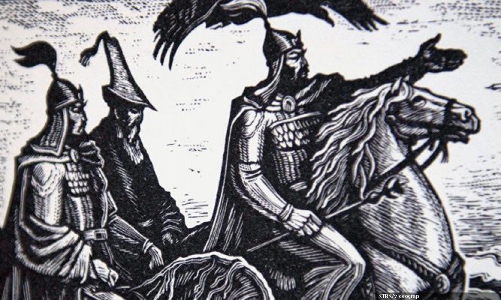
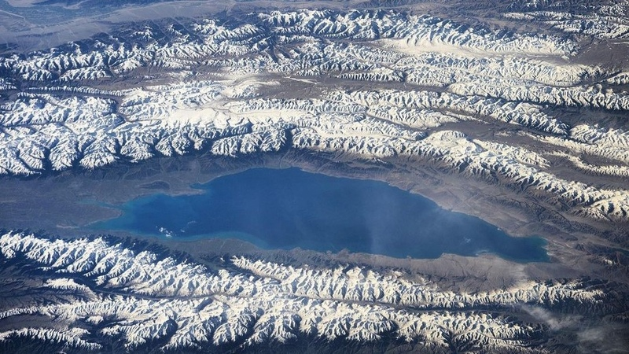

❮
❯
Almost 90% of the country are taken by mountains.There are over 88 major mountain ranges in Kyrgyzstan, most of them forming the Tian Shan - the Celestial Mountains. The others, such as the Chon Alai Range in the south of the country, belong to the Pamir Mountains. Kyrgyzstan’s mountains effectively divide the country into a number of distinct regions. The two biggest regions are the northern and southern halves of Kyrgyzstan, united by one main road from Osh to Bishkek. Most of the ranges vary in length from 100 to 300 km (62 to 186 miles). The longest, Kakshaal, is 582 km (361 miles), and the Kyrgyz Range, which is to the south of Bishkek, is 454 km (282 miles) long. Most ranges are between 10 and 40 km (6 and 25 miles) wide. In Soviet times, many of these peaks were off-limits without passes, which were hard to get. Even now, when many restrictions have been eased, some places still require difficult border passes, making them difficult to reach.
The Epic of Manas is a traditional epic poem dating to the 18th century but claimed by Kyrgyz tradition to be much older. Manas is said to be based on Bars Bek who was the first khagan of the Kyrgyz Khaganate. The plot of Manas revolves around a series of events that coincide with the history of the region in the 9th century, primarily the interaction of the Kyrgyz people with Turkic and Chinese people. The eponymous hero of Manas and his Oirat enemy Joloy were first found written in a Persian manuscript dated to 1792–93. In one of its dozens of iterations, the epic poem consists of approximately 500,000 lines.
Lake Ysyk-Kul, a drainless salt lake in northeastern Kyrgyzstan. Situated in the northern Tien Shan, it is one of the largest high-mountain lakes in the world and is famous for its magnificent scenery and unique scientific interest. It is situated within the bottom edges of the Lake Ysyk basin, which is bordered to the north by the Kungey Ala Too Range and to the south by the Terskey Ala Too Range. The lake has a length of 182 km, a width up to 61 km, and a surface area of 6,280 square km. It reaches a depth of 668 metres and averages some 280 metres deep. The lake’s Kyrgyz name, Ysyk-köl, means “Hot Lake,” alluding to the fact that it does not freeze over during the winter.